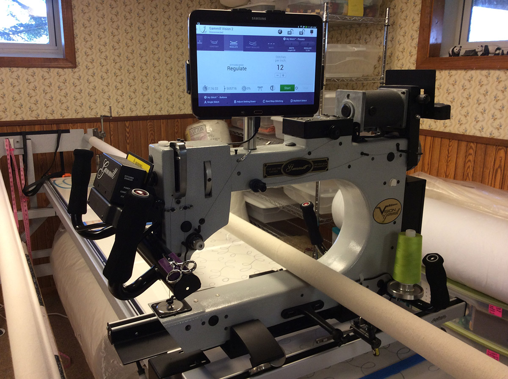

PLEASE TAKE NOTE! UNFORTUNATELY IN THE TIME OF THE COVID PANDEMIC, ALL RENTAL HAS BEEN SUSPENDED UNTIL???????? I AM A SMALL HOME BASED BUSINESS WITH BABYSITTING OBLIGATIONS THAT ARE A PRIORITY TO ME AT THIS TIME. WHILE I MISS SPENDING TIME WITH AND HELPING MY QUILTING FRIENDS, THE SAFETY OF MY FAMILY COMES FIRST. I AM STILL TAKING IN QUILTS AND RETURNING THEM “CURBSIDE” AND WILL CONTINUE TO DO SO. PLEASE CONSULT THE QUILTING SERVICES PAGES FOR PRICING. THANK YOU FOR YOUR UNDERSTANDING!
Our rental long arm machine is a Gammill Vision II 18 longarm quilting machine. Gammill is considered a leader in longarm sewing machine technology, usability, and reliability. Powered by a Samsung Galaxy tablet touch screen interface, with choices of basting, manual, regulated and “Coast” stitching modes, this Gammill is fun and easy to use. The 10’ Pro Frame will handle quilts from wall hangings to king size backings up to 108″ wide. The frame is equipped with an optional hydraulic lift system to accommodate quilters of all heights, even sitting. You, the quilter, have access to all tools the studio has to offer- stencils, marking tools, templates, pantographs and guides- as well as the advice of a quilting professional with 15 years of experience. Several hours of your time is all it takes to go from three separate layers to a quilt ready for binding and cuddling!
Scheduling Appointments
Because we are working out of our home, business is conducted by appointment only. Every effort will be made to accommodate people’s schedules, however walk ins are not available at this time. Our schedule is flexible, therefore we can accommodate evening and weekend appointments. However, please keep in mind the size of your project when scheduling an appointment. Queen and king sized quilts take several hours to complete and will not be scheduled later than 4:00 pm to be completed by 9:00pm.
Your rental time starts when you begin loading your quilt on the frame. You are charged an hourly rate in quarter hour increments. If you have design questions or want ideas to practice before you actually begin, please consider scheduling a free “pre-rental consultation”. Be ready to quilt when you arrive so planning doesn’t increase the cost of your rental.
Thread is provided by the Mermac Design Quilt Studio with over 100 colors available and is incorporated into the cost of your rental. You are not limited to one color of thread in your quilt, however multiple thread changes will add to your rental time. Batting is also available for purchase at the studio, however is not required. Please see our Thread & Batting page for more information.
Things to Know
- The studio is downstairs and is not handicapped accessible.
- This is our home and we wish to keep “shoe traffic” to a minimum. Please bring slippers.
- There is a pet if allergies are a consideration.
- We maintain a strictly smoke free environment. Please see the Quilt Preparation page for instructions on how to treat your quilt when coming from a smoking environment. Smoky clothing, coats, and quilts will not be allowed in the house. We thank you for your cooperation on this matter.